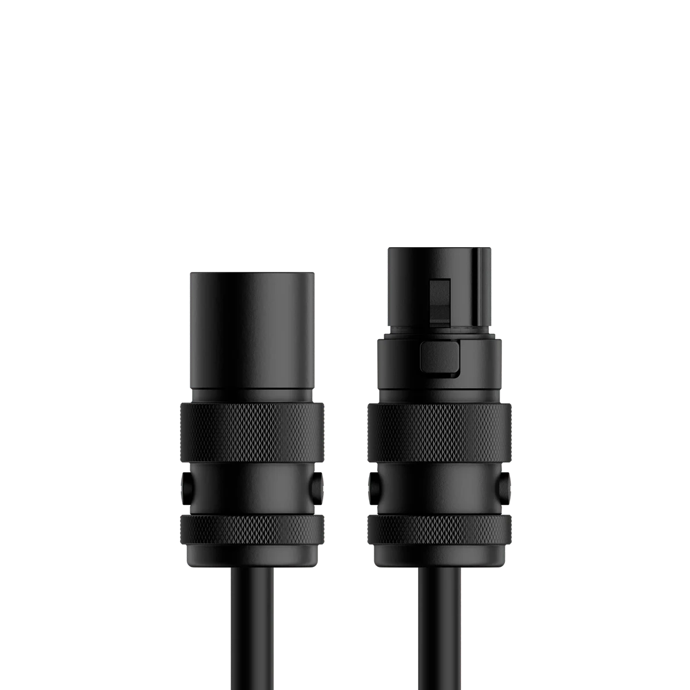
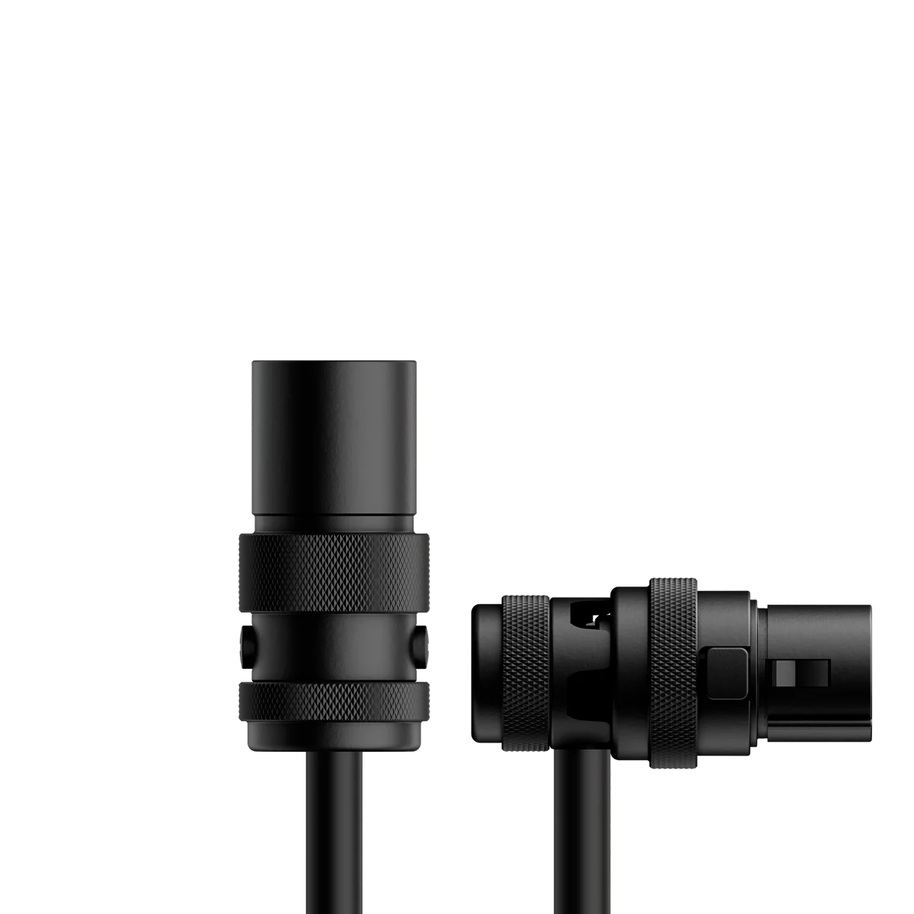
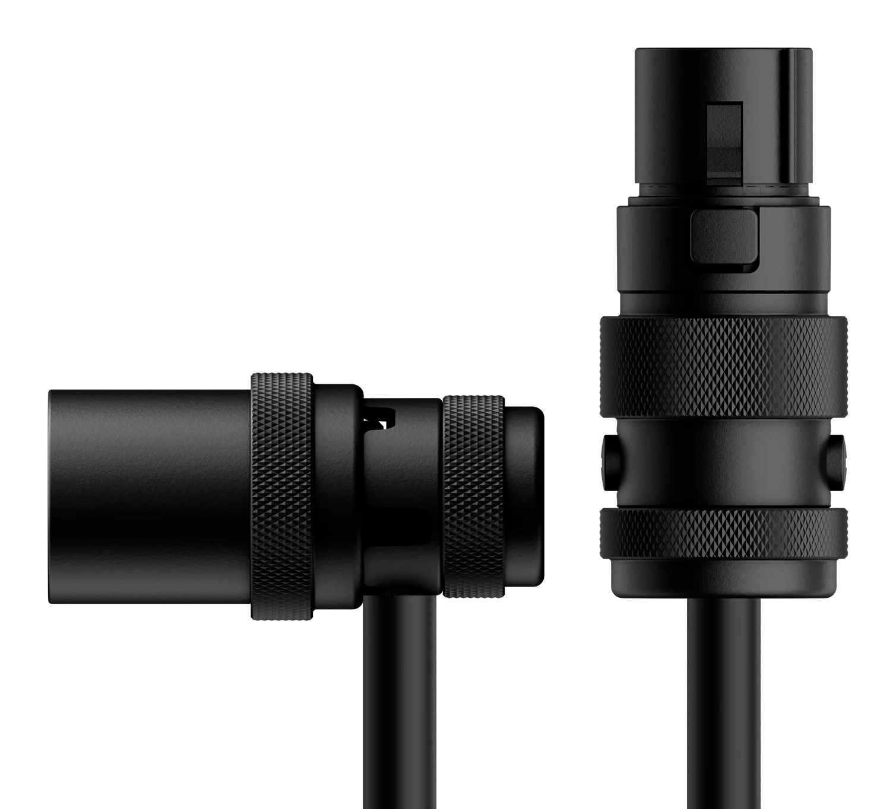
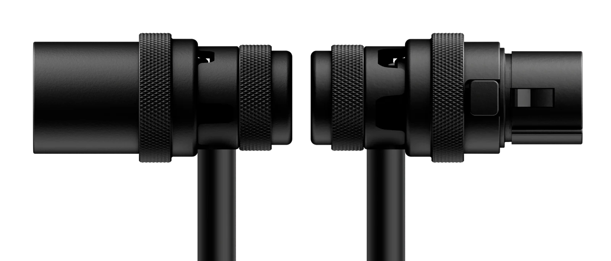

01 Series
Quad core balanced microphone cables
Our microphone cables are precision–engineered for professional audio applications, delivering exceptional signal integrity, durability, and mechanical resilience.
Read more
Built around a quad–core balanced design, they provide superior common–mode noise rejection while also improving electromagnetic interference immunity, phase stability, and overall signal clarity over long cable runs. This architecture enhances performance in electrically noisy environments and helps maintain consistent audio fidelity under demanding conditions.
Each cable is terminated with our patented compact SPX and SPXA series connectors, ensuring reliable, space–efficient integration.
As a result, these cables are suited for a broad range of demanding professional audio environments, including live sound reinforcement, broadcast and OB production, studio recording, post-production facilities, theatrical sound systems, touring rigs, and permanent installed audio infrastructures.
Available in four connector configurations, with six standard lengths offered for each: 3, 6, 10, 15, 25, and 50 ft
Available in four connector configurations, with six standard lengths offered for each: 3, 6, 10, 15, 25, and 50 ft
Available in four connector configurations, with six standard lengths offered for each: 3, 6, 10, 15, 25, and 50 ft
Available in four connector configurations, with six standard lengths offered for each: 3, 6, 10, 15, 25, and 50 ft
01A